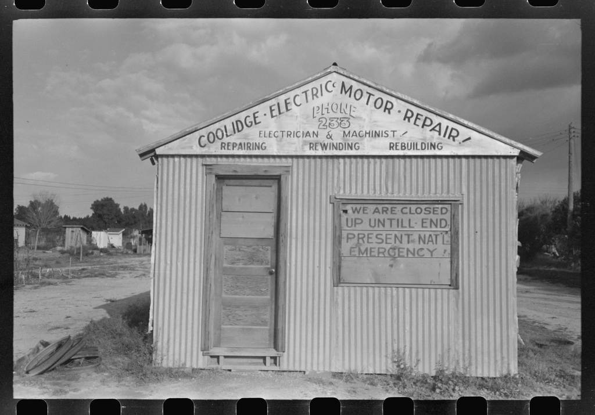

Industri, maskin & tekniske systemer · Norge
Om Amitec
Siden 1994 har vi hjulpet virksomheter med systemer og kompetanse som bygger bro mellom operasjonell teknologi og IT.
Amitec bistår kunder i Norge med fagmessige leveranser innen prosjektering og tekniske leveranser, montering, idriftsettelse og integrasjon, service, vedlikehold og sakkyndig kontroll og energioptimalisering og oppgradering.
Vi vet hva uplanlagt stans koster – derfor leverer vi utstyr og vedlikehold som tåler kontinuerlig drift. Alle leveranser og kontroller dokumenteres med sertifikater, testprotokoller og sporbare datablader.
Våre fagfolk kombinerer teoretisk innsikt med praktisk erfaring fra verksted, anlegg og felt. Vi følger opp anlegget gjennom hele levetiden med support, reservedeler og oppgraderinger.
«Teknisk presisjon, dokumenterte løsninger og høy oppetid for norsk industri og næringsliv.»

Vil du vite mer om hvordan vi kan hjelpe deg?
Ta kontakt for en uforpliktende samtale med våre fagfolk.
Ta kontakt